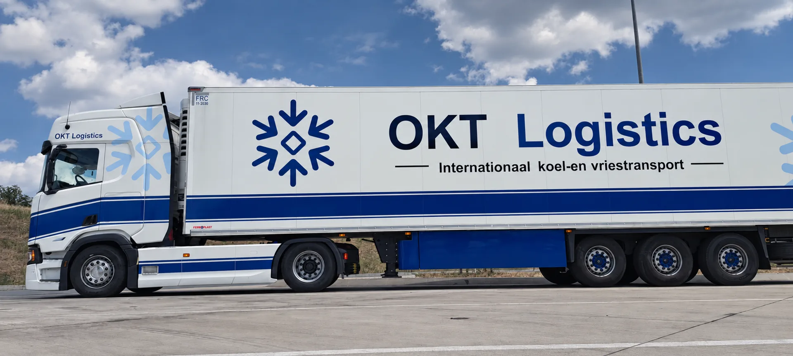

Product en conditie
Beschrijf de diepgevroren goederen, verpakking en afgesproken temperatuur. De productspecificatie blijft leidend, ook als op een eerdere rit een andere instelling is gebruikt.
Voor diepgevroren producten zijn stabiele condities, strakke laad- en lostijden en directe communicatie essentieel. OKT Logistics verzorgt vriestransport in Nederland en richting Duitsland, België en Frankrijk.

Bij vriestransport draait het niet om één standaardtemperatuur voor ieder product. We stemmen de uitvoering af op de afgesproken productspecificatie, route, laad- en losvensters, aantal pallets en eventuele operationele bijzonderheden.
Van losse transportaanvraag tot terugkerende stroom: de focus ligt op praktische uitvoering, bereikbaarheid en heldere afspraken.
Laad- en losadres, datum, gewenste temperatuur, aantal pallets, gewicht en type goederen vormen een goede basis.
Nee. De vereiste temperatuur is afhankelijk van product en opdracht. De transportconditie wordt daarom vooraf afgestemd.
De huidige focus ligt op Nederland en internationale ritten richting Duitsland, België en Frankrijk.
Stuur laadadres, losadres, datum, temperatuur, aantal pallets en gewicht. Zo kan OKT Logistics snel beoordelen welke transportoplossing past.
Beschrijf de diepgevroren goederen, verpakking en afgesproken temperatuur. De productspecificatie blijft leidend, ook als op een eerdere rit een andere instelling is gebruikt.
Stem af wanneer de goederen gereedstaan en welke laadvoorwaarden gelden. Vraag niet automatisch om een vaste standaardtemperatuur voor alle producten.
Geef het losvenster, de ontvanger en eventuele documentatie-eisen door.
Een aanvraag is vrijblijvend. Operations beoordeelt route, capaciteit en productcondities.